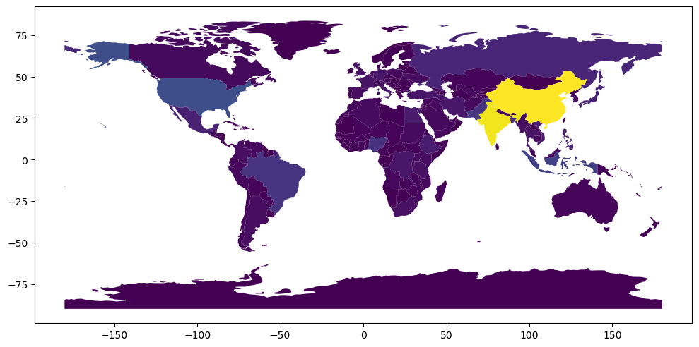
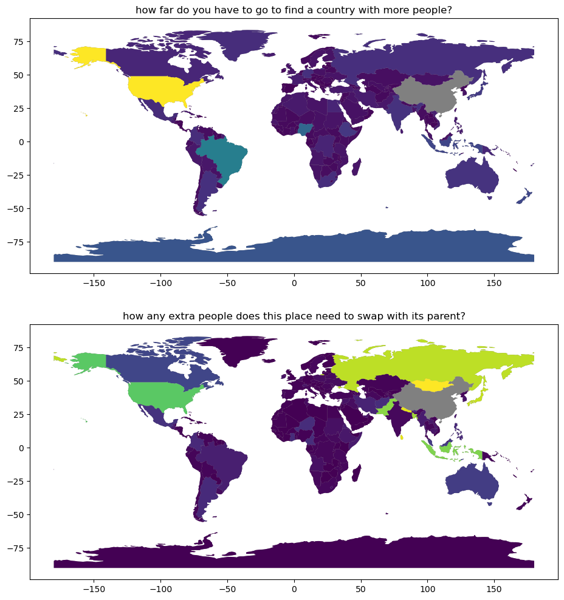
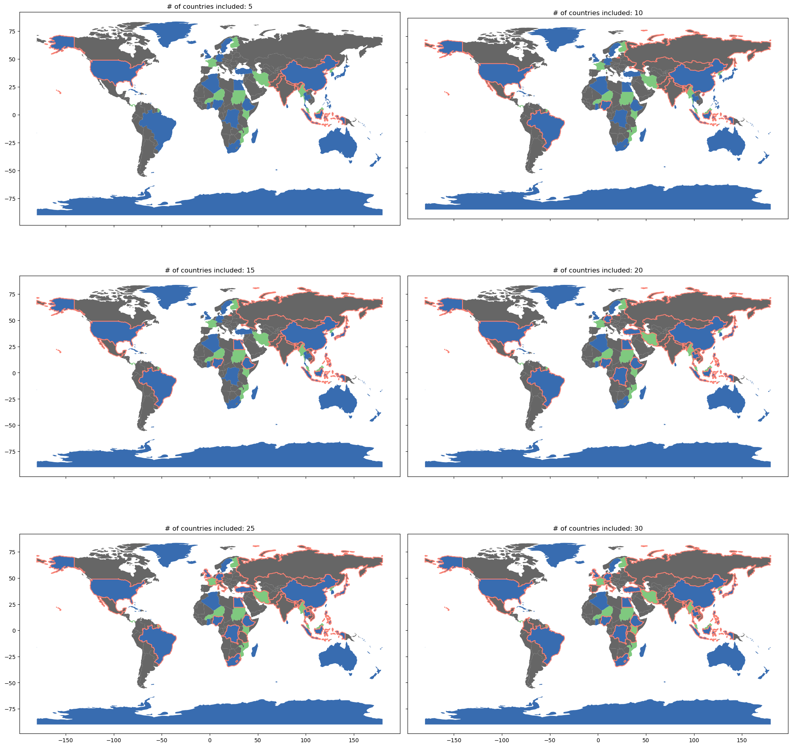
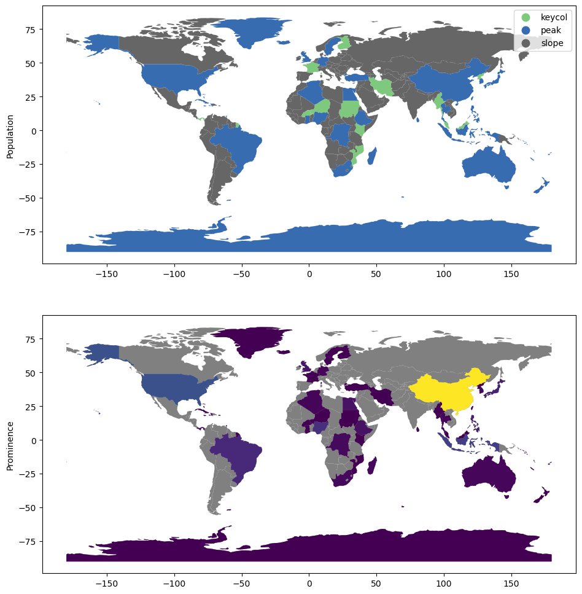

This page was generated from build/.jupyter_cache/executed/6126f965bf8d1578124ff189a9b9a1e4/base.ipynb.
Interactive online version:

[1]:
import warnings
import geopandas
import matplotlib.pyplot as plt
import numpy
from libpysal import weights
from esda import topo
[2]:
natearth = geopandas.read_file(
"https://naciscdn.org/naturalearth/110m/cultural/ne_110m_admin_0_countries.zip"
)
[3]:
natearth.sort_values("POP_EST", ascending=False).head()
[3]:
| featurecla | scalerank | LABELRANK | SOVEREIGNT | SOV_A3 | ADM0_DIF | LEVEL | TYPE | TLC | ADMIN | ... | FCLASS_TR | FCLASS_ID | FCLASS_PL | FCLASS_GR | FCLASS_IT | FCLASS_NL | FCLASS_SE | FCLASS_BD | FCLASS_UA | geometry | |
|---|---|---|---|---|---|---|---|---|---|---|---|---|---|---|---|---|---|---|---|---|---|
| 139 | Admin-0 country | 1 | 2 | China | CH1 | 1 | 2 | Country | 1 | China | ... | NaN | NaN | NaN | NaN | NaN | NaN | NaN | NaN | NaN | MULTIPOLYGON (((109.47521 18.1977, 108.65521 1... |
| 98 | Admin-0 country | 1 | 2 | India | IND | 0 | 2 | Sovereign country | 1 | India | ... | NaN | NaN | NaN | NaN | NaN | NaN | NaN | NaN | NaN | POLYGON ((97.32711 28.26158, 97.40256 27.88254... |
| 4 | Admin-0 country | 1 | 2 | United States of America | US1 | 1 | 2 | Country | 1 | United States of America | ... | NaN | NaN | NaN | NaN | NaN | NaN | NaN | NaN | NaN | MULTIPOLYGON (((-122.84 49, -120 49, -117.0312... |
| 8 | Admin-0 country | 1 | 2 | Indonesia | IDN | 0 | 2 | Sovereign country | 1 | Indonesia | ... | NaN | NaN | NaN | NaN | NaN | NaN | NaN | NaN | NaN | MULTIPOLYGON (((141.00021 -2.60015, 141.01706 ... |
| 102 | Admin-0 country | 1 | 2 | Pakistan | PAK | 0 | 2 | Sovereign country | 1 | Pakistan | ... | NaN | NaN | NaN | NaN | NaN | NaN | NaN | NaN | NaN | POLYGON ((77.83745 35.49401, 76.87172 34.65354... |
5 rows × 169 columns
[4]:
f, ax = plt.subplots(1, 1, figsize=(12, 6))
natearth.plot("POP_EST", ax=ax)
[4]:
<Axes: >

[5]:
with warnings.catch_warnings():
warnings.filterwarnings(
"ignore",
category=UserWarning,
message="Geometry is in a geographic CRS",
)
coordinates = numpy.column_stack((natearth.centroid.x, natearth.centroid.y))
[6]:
iso = topo.isolation(natearth["POP_EST"], coordinates, return_all=True)
[7]:
natearth = natearth.merge(iso, left_index=True, right_index=True)
[8]:
natearth[
["CONTINENT", "NAME", "rank", "POP_EST", "parent_rank", "isolation", "gap"]
].sort_values("POP_EST", ascending=False).head()
[8]:
| CONTINENT | NAME | rank | POP_EST | parent_rank | isolation | gap | |
|---|---|---|---|---|---|---|---|
| 139 | Asia | China | 0.0 | 1.397715e+09 | NaN | NaN | NaN |
| 98 | Asia | India | 1.0 | 1.366418e+09 | 0.0 | 27.852795 | 3.129725e+07 |
| 4 | North America | United States of America | 2.0 | 3.282395e+08 | 1.0 | 193.538522 | 1.038178e+09 |
| 8 | Asia | Indonesia | 3.0 | 2.706256e+08 | 0.0 | 41.072699 | 1.127089e+09 |
| 102 | Asia | Pakistan | 4.0 | 2.165653e+08 | 1.0 | 12.381725 | 1.149852e+09 |
[9]:
f, ax = plt.subplots(2, 1, figsize=(12, 12))
for i in range(2):
natearth.plot(color="grey", ax=ax[i])
natearth.plot("isolation", ax=ax[0])
natearth.plot("gap", ax=ax[1])
ax[0].set_title("how far do you have to go to find a country with more people?")
ax[1].set_title("how any extra people does this place need to swap with its parent?")
plt.show()

[10]:
w_rook = weights.Rook.from_dataframe(natearth, use_index=False, silence_warnings=True)
prominence = topo.prominence(natearth["POP_EST"], w_rook, return_all=True)
[11]:
natearth = natearth.merge(
prominence, left_index=True, right_index=True, suffixes=("", "_prom")
)
[12]:
natearth[
[
"CONTINENT",
"NAME",
"POP_EST",
"rank",
"parent_rank",
"isolation",
"dominating_peak",
"keycol",
"prominence",
]
].sort_values("POP_EST", ascending=False).head(20)
[12]:
| CONTINENT | NAME | POP_EST | rank | parent_rank | isolation | dominating_peak | keycol | prominence | |
|---|---|---|---|---|---|---|---|---|---|
| 139 | Asia | China | 1.397715e+09 | 0.0 | NaN | NaN | 139.0 | 107.0 | 1.314801e+09 |
| 98 | Asia | India | 1.366418e+09 | 1.0 | 0.0 | 27.852795 | 139.0 | -1.0 | NaN |
| 4 | North America | United States of America | 3.282395e+08 | 2.0 | 1.0 | 193.538522 | 139.0 | 33.0 | 3.239931e+08 |
| 8 | Asia | Indonesia | 2.706256e+08 | 3.0 | 0.0 | 41.072699 | 4.0 | 148.0 | 2.386758e+08 |
| 102 | Asia | Pakistan | 2.165653e+08 | 4.0 | 1.0 | 12.381725 | 139.0 | -1.0 | NaN |
| 29 | South America | Brazil | 2.110495e+08 | 5.0 | 2.0 | 82.093057 | 8.0 | 43.0 | 1.439896e+08 |
| 56 | Africa | Nigeria | 2.009636e+08 | 6.0 | 5.0 | 64.353456 | 29.0 | 55.0 | 1.776529e+08 |
| 99 | Asia | Bangladesh | 1.630462e+08 | 7.0 | 1.0 | 10.713323 | 139.0 | -1.0 | NaN |
| 18 | Europe | Russia | 1.443735e+08 | 8.0 | 0.0 | 26.374718 | 139.0 | -1.0 | NaN |
| 27 | North America | Mexico | 1.275755e+08 | 9.0 | 2.0 | 23.966775 | 4.0 | -1.0 | NaN |
| 155 | Asia | Japan | 1.262649e+08 | 10.0 | 0.0 | 34.199305 | 56.0 | -1.0 | 1.262648e+08 |
| 165 | Africa | Ethiopia | 1.120787e+08 | 11.0 | 6.0 | 31.568798 | 155.0 | 13.0 | 5.950476e+07 |
| 147 | Asia | Philippines | 1.081166e+08 | 12.0 | 3.0 | 15.020572 | 165.0 | -1.0 | 1.081165e+08 |
| 163 | Africa | Egypt | 1.003881e+08 | 13.0 | 11.0 | 20.320874 | 147.0 | 14.0 | 5.757484e+07 |
| 94 | Asia | Vietnam | 9.646211e+07 | 14.0 | 12.0 | 17.322577 | 139.0 | -1.0 | NaN |
| 11 | Africa | Dem. Rep. Congo | 8.679057e+07 | 15.0 | 11.0 | 19.680827 | 163.0 | 13.0 | 3.421659e+07 |
| 124 | Asia | Turkey | 8.342962e+07 | 16.0 | 13.0 | 13.623370 | 11.0 | 107.0 | 5.157090e+05 |
| 121 | Europe | Germany | 8.313280e+07 | 17.0 | 16.0 | 27.604762 | 124.0 | 43.0 | 1.607291e+07 |
| 107 | Asia | Iran | 8.291391e+07 | 18.0 | 4.0 | 15.341195 | 124.0 | -1.0 | 0.000000e+00 |
| 91 | Asia | Thailand | 6.962558e+07 | 19.0 | 14.0 | 5.528840 | 121.0 | 93.0 | 1.558016e+07 |
[13]:
f, ax = plt.subplots(3, 2, figsize=(20, 20), sharex=True, sharey=True)
ax = ax.flatten()
for ix, rank in enumerate(range(5, 31, 5)):
natearth.plot("classification", ax=ax[ix], cmap="Accent")
natearth.sort_values("POP_EST", ascending=False).iloc[0:rank].boundary.plot(
color="salmon", ax=ax[ix]
)
ax[ix].set_title(f"# of countries included: {rank}")
f.tight_layout()
plt.show()

[14]:
f, ax = plt.subplots(2, 1, figsize=(12, 12))
natearth.plot("classification", ax=ax[0], legend=True, cmap="Accent")
natearth.plot(color="grey", ax=ax[1])
natearth.plot("prominence", ax=ax[1])
ax[0].set_ylabel("Population")
ax[1].set_ylabel("Prominence")
plt.show()

[ ]:
[ ]: